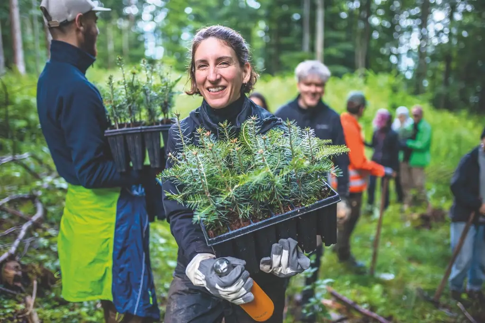

Mutter Natur Deutschland
Dokumentarische Plattform & Umweltbewegung auf Instagram – für Projekte, die etwas für Natur, Umwelt und Tiere tun.
Es gibt Menschen, die jeden Tag für unsere Natur kämpfen.
Oft, ohne dass es jemand sieht.
Wer wir sind
Mutter Natur Deutschland ist eine dokumentarische Plattform für Natur-, Umwelt- und Tierschutzprojekte im deutschsprachigen Raum.
Dahinter steht eine Produktionsfirma, die sich auf die filmische Begleitung von Umwelt- und Naturprojekten spezialisiert hat: Mutter Natur.
Aus dieser Arbeit ist eine einfache Idee entstanden: Diese Geschichten nicht nur in einzelnen Filmen zu erzählen, sondern einen Ort zu schaffen, an dem sie alle sichtbar werden.
Was wir suchen
Projekte, Organisationen und Initiativen, die aktiv etwas für Natur, Umwelt, Tiere oder Nachhaltigkeit tun – und mehr Sichtbarkeit verdienen, als sie gerade haben.
Uns interessiert nicht die perfekte Hochglanz-Story. Uns interessiert die echte:
Wer steckt dahinter? Warum gibt es dieses Projekt? Und was verändert sich dadurch wirklich?
Wie es funktioniert
- Du entscheidest. Welchen Teil deiner Arbeit du zeigen willst, und wie. Reel oder Bildpost, dein Material, deine Form.
- Wir veröffentlichen gemeinsam. Als Instagram-Collab-Post – zwei Accounts, eine Reichweite. Die Rechte an deinem Content bleiben bei dir.
- Kein eigenes Material? Dann springen wir ein und produzieren mit dir zusammen. Daraus wird ein eigener Auftrag, den wir gemeinsam abstimmen.
Keine Vorgaben, keine Kosten. Wir schauen uns jeden Beitrag nur kurz an – nicht um reinzureden, sondern um sicherzugehen, dass er zu unserer Mission passt.
Was du davon hast
- Zugang zu unserer Community. Menschen, die sich schon für die Natur interessieren und nur noch den letzten Schub zur echten Aktion brauchen.
- Sichtbarkeit über zwei Kanäle. Mutter Natur und unser persönliches Netzwerk.
- Professionelle, dokumentarische Aufbereitung deiner Geschichte. Kostenlos.
- Einen Partner, der mitdenkt. Wenn aus deiner Story mehr werden soll, bauen wir gemeinsam weiter.
Grundprinzipien der Beiträge
- Ein starker Hook
- Emotionaler Einstieg
- Klare, verständliche Story
- Authentischer, dokumentarischer Stil
- Positive, lösungsorientierte Wirkung
Die Vision
Mutter Natur Deutschland soll die zentrale Plattform für moderne Natur- und Umweltprojekte im deutschsprachigen Raum werden.
Mit echten Geschichten. Echter Reichweite. Und einer Community, die nicht nur zusieht, sondern selbst aktiv wird.
Nächster Schritt
Schreib uns kurz: Welches Projekt willst du zeigen – und was willst du daraus erzählen? Wir melden uns, und gemeinsam bringen wir deine Geschichte raus in die Welt.
Go out there. Let’s live it.